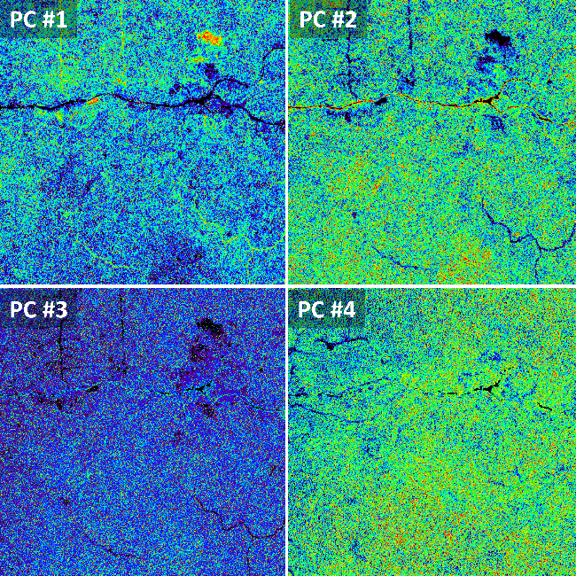
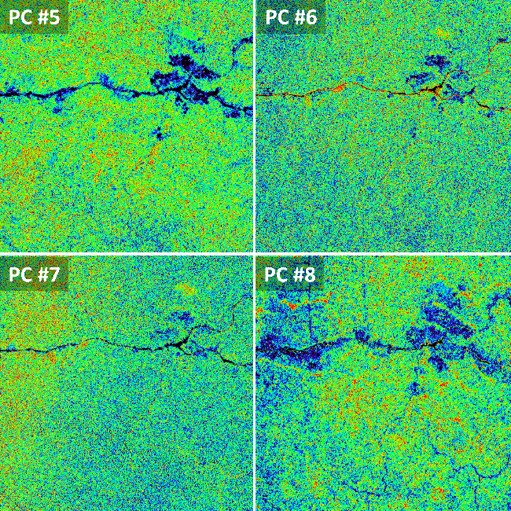

vignettes/biodivMapR_04.Rmd
biodivMapR_04.RmdThe function perform_PCA allows for application of PCA
(or SPCA or MNF), and automatically accounts for the mask.
It results in a PCA file written in the output directory (full path
defined in PCA_Output$PCA_Files).
A set of additional information, including the PCA model obtained, an additional spectral filter (useful if some spectral bands with no information are still not masked).
The additional PCA filtering is performed during this stage.
print("PERFORM DIMENSIONALITY REDUCTION")
PCA_Output <- perform_PCA(Input_Image_File = Input_Image_File, Input_Mask_File = Input_Mask_File,
Output_Dir = Output_Dir, TypePCA = TypePCA, FilterPCA=FilterPCA,
nbCPU = nbCPU, MaxRAM = MaxRAM, Continuum_Removal = Continuum_Removal)
# path of the raster resulting from dimensionality reduction
PCA_Files <- PCA_Output$PCA_Files
# number of pixels used for each partition used for k-means clustering
Pix_Per_Partition <- PCA_Output$Pix_Per_Partition
# number of partitions used for k-means clustering
nb_partitions <- PCA_Output$nb_partitions
# path for the updated mask
Input_Mask_File <- PCA_Output$MaskPathThe dimensionality reduction is performed to select the most
interesting spectral information relative to spectral diversity and
remove spatial noise and sensor artefacts. The resulting transformed
raster (PCA, SPCA or MNF) is then stored in a binary file in the
Output_Dir directory, which in our case corresponds to
RESULTS/S2A_T33NUD_20180104_Subset/SPCA/PCA/OutputPCA_8_PCs
This raster file can be displayed using QGIS or any GIS / image processing software. Here, the PCs corresponding to our image look like this:

User then needs to select components based on visual interpretation.
This component selection is saved in a .txt file located in
the same directory as the raster file.
The file is automatically created and ready to edit with function
select_PCA_components. This file expects one component
selected to be written per line.
The main goal of PC selection is to discard PCs showing no relevant information corresponding to vegetation, or including artifacts possibly explained by sensor properties. It is somehow a subjective process, and we are currently working on automatic selection of these components.
# Select components from the PCA/SPCA/MNF raster
# Sel_PC = path of the file where selected components are stored
Sel_PC <- select_PCA_components(Input_Image_File = Input_Image_File,
Output_Dir = Output_Dir, PCA_Files = PCA_Files,
TypePCA = TypePCA, File_Open = TRUE)For this example, PCA bands 1, 2, 5, 6 and 8 can be kept if writing
the following lines in file Selected_Components.txt opened
for edition (do not forget carriage return after last value):
1
2
5
6
8PC#3 and PC#7 were discarded as the main patterns observed for these components did not correspond to vegetation patterns. As a rule of thumb, between 2 and 6 selected PCs are usually sufficient to catch the main diversity patterns, but this selection strongly depends on the conditions of acquisition, the type of sensor, and the complexity of the vegetation being observed.
The computation of the spectral species can then be performed in the next step.